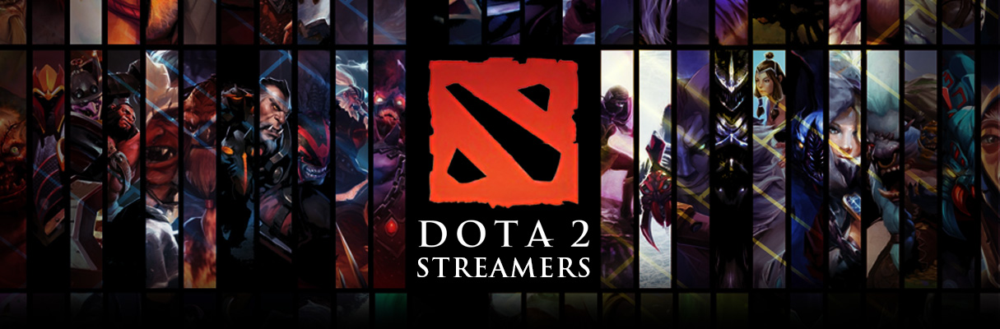

Dota 2
|
發行日期 : 2013年7月9日
|
|
遊戲內容
DOTA最早的起源是魔獸爭霸中的一張自定義地圖，源自於一位名為Eul的玩家，加大了地圖並新增各種道具與野怪，製作了一款Defense of the Ancients，也就是DOTA的原型。在Eul神隱後，遊戲的更新與開發最後輾轉來到Icefrog手中，在與Valve公司合作後，誕生Dota 2這款膾炙人口的作品。身為始祖級別的MOBA遊戲，本作套用Valve的自有引擎「起源2」，在畫面與流暢度上都有著傲人的表現。除此之外，Dota 2擁有超過100位英雄，增加了玩家選擇的多樣性，更值得一提的是，這些英雄都可以免費使用，當然也有著多樣的造型可供選購，但商城並沒有販賣任何能增強角色的現金道具，所以基本上遊玩Dota 2是完全免費的。而這款遊戲也同樣有著大量的電競比賽，吸引了大量的人潮，並且在2017年國際邀請賽以6.9億台幣的獎金突破電競史上最高紀錄。